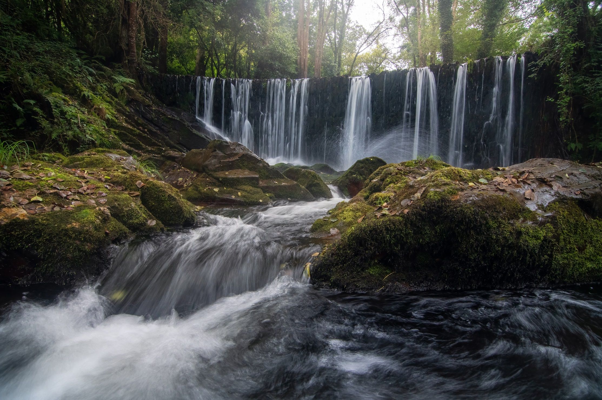
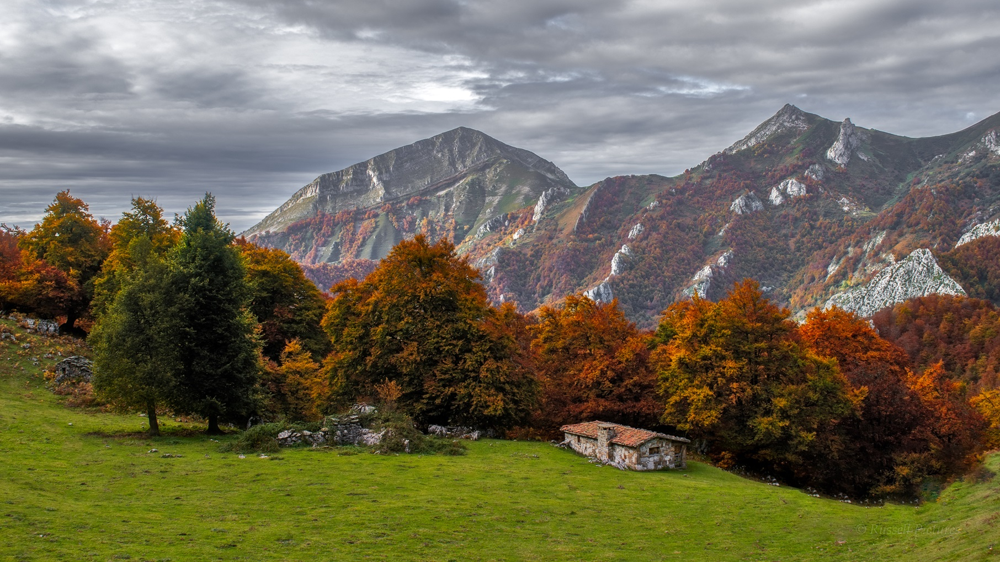
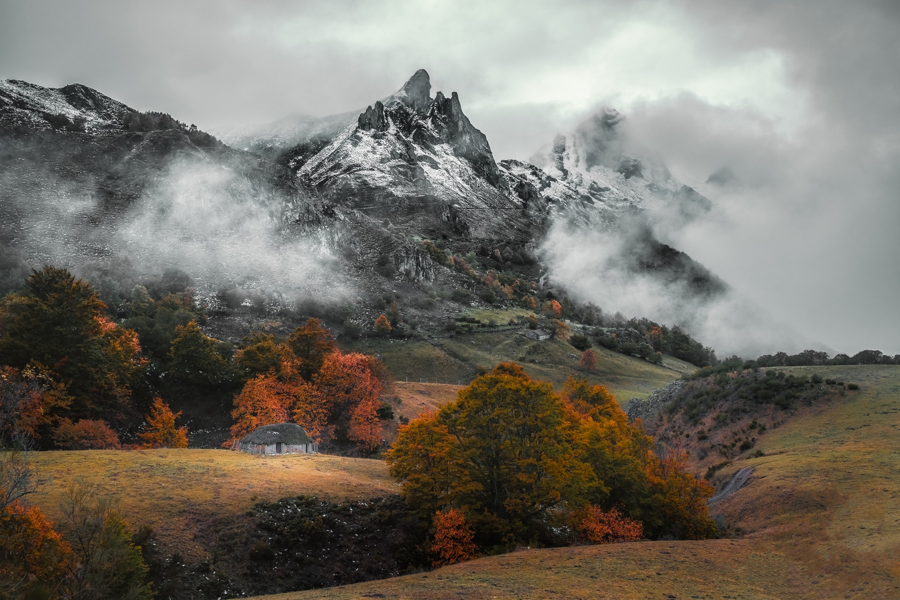
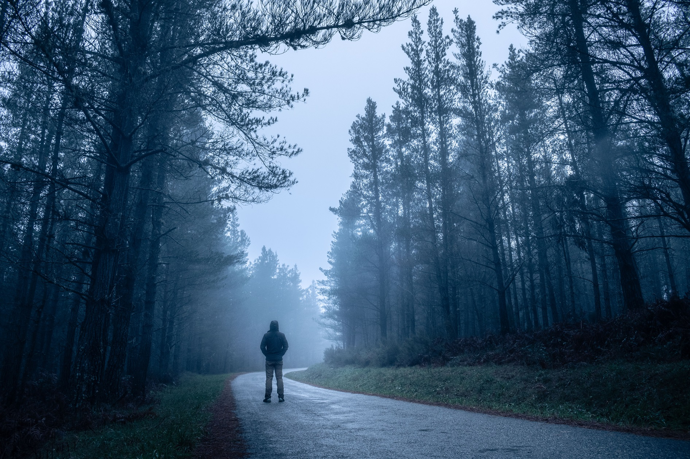

Galería de Imágenes




×

Un recorrido único por la belleza natural de los pueblos de Riaño
Explora Riaño 360Riaño 360 es un recorrido de 96km que conecta ocho pueblos alrededor del embalse de Riaño. Creado para descentralizar el turismo y destacar el valor de la naturaleza y la cultura local.
Conoce el recorrido y los puntos clave del trayecto que pasa por Vegacerneja, Liegos, Salamón, Las Salas, Horcadas, Carande y Boca de Huérgano.
Descubre rutas y tracks detallados para que puedas explorar Riaño 360 con toda la información necesaria.
Sumérgete en la historia, cultura y paisajes de la ruta Riaño 360 con este documental completo.